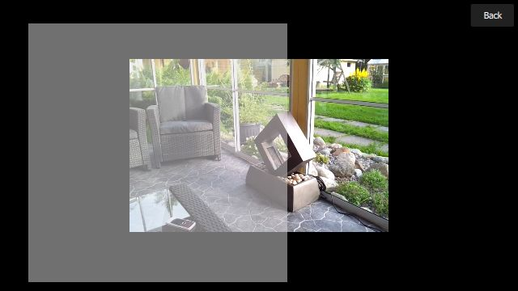
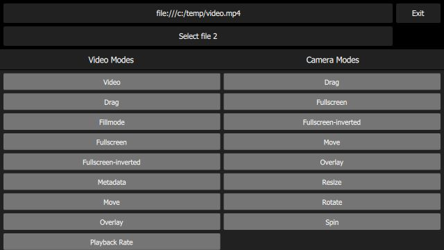
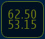

QML Video Example
Transforming video and camera viewfinder content.
QML Video demonstrates the various transformations (move; resize; rotate; change aspect ratio) that can be applied to QML VideoOutput and Camera types.
It also shows how native code can be combined with QML to implement more advanced functionality - in this case, C++ code is used to calculate the QML frame rate. This value is rendered in QML in a semi-transparent item overlaid on the video content.
The following image shows the application executing the video-overlay scene, which creates a dummy overlay item (just a semi-transparent Rectangle), which moves across the VideoOutput item.

Running the Example
To run the example from Qt Creator, open the Welcome mode and select the example from Examples. For more information, visit Building and Running an Example.
Application Structure
The main.qml file creates a UI which includes the following items:
- Two
Buttoninstances, each of which displays a filename, and can be used to launch aFileBrowser. - An exit
Button. - A
SceneSelectionPanel, which is a flickable list displaying the available scenes. - At the lower left, an item which displays the QML repainting rate - the upper number is the instantaneous frame rate and the lower number is the average over the past second.

Each scene in the flickable list is implemented in its own QML file - for example the video-basic scene (which just displays a static VideoOutput in the center of the screen) is implemented in the VideoBasic.qml file. As you can see from the code, this makes use of a type of inheritance; a VideoBasic item ...
import QtQuick 2.0 SceneBasic { contentType: "video" }
... is of type SceneBasic ...
import QtQuick 2.0 Scene { id: root property string contentType ... Content { id: content ... } Text { anchors { horizontalCenter: parent.horizontalCenter bottom: parent.bottom margins: 20 } text: content.started ? "Tap the screen to stop content" : "Tap the screen to start content" color: "#e0e0e0" z: 2.0 } MouseArea { anchors.fill: parent onClicked: { if (content.started) content.stop() else content.start() } } Component.onCompleted: root.content = content }
... which itself is a Scene:
import QtQuick 2.0 Rectangle { id: root ... property QtObject content ... Button { id: closeButton anchors { top: parent.top right: parent.right margins: root.margins } width: Math.max(parent.width, parent.height) / 12 height: Math.min(parent.width, parent.height) / 12 z: 2.0 bgColor: "#212121" bgColorSelected: "#757575" textColorSelected: "white" text: "Back" onClicked: root.close() } }
SceneBasic describes the structure and behavior of the scene, but is agnostic of the type of content which will be displayed - this is abstracted by Content.
This pattern allows us to define a particular use case (in this case, simply display a static piece of content), and then instantiate that use case for both video content (VideoBasic) and camera content ({CameraBasic}). This approach is used to implement many of the other scenes - for example, "repeatedly slide the content from left to right and back again" is implemented by SceneMove, on which VideoMove and CameraMove are based.
Depending on the value of the contentType property in the top-level scene instance, the embedded Content item creates either a MediaPlayer or a Camera item.
Calculating and Displaying QML Painting Rate
The QML painting rate is calculated by the FrequencyMonitor class, which turns a stream of events (received via the notify() slot), into an instantaneous and an averaged frequency:
class FrequencyMonitor : public QObject { Q_OBJECT Q_PROPERTY(qreal instantaneousFrequency READ instantaneousFrequency NOTIFY instantaneousFrequencyChanged) Q_PROPERTY(qreal averageFrequency READ averageFrequency NOTIFY averageFrequencyChanged) public: ... static void qmlRegisterType(); public slots: Q_INVOKABLE void notify(); };
The FrequencyMonitor class is exposed to QML like this
void FrequencyMonitor::qmlRegisterType() { ::qmlRegisterType<FrequencyMonitor>("FrequencyMonitor", 1, 0, "FrequencyMonitor"); }
and its data is displayed by defining a QML item called FrequencyItem, like this:
import FrequencyMonitor 1.0 Rectangle { id: root ... function notify() { monitor.notify() } FrequencyMonitor { id: monitor onAverageFrequencyChanged: { averageFrequencyText.text = monitor.averageFrequency.toFixed(2) } } Text { id: labelText anchors { left: parent.left top: parent.top margins: 10 } color: root.textColor font.pixelSize: 0.6 * root.textSize text: root.label width: root.width - 2*anchors.margins elide: Text.ElideRight } Text { id: averageFrequencyText anchors { right: parent.right bottom: parent.bottom margins: 10 } color: root.textColor font.pixelSize: root.textSize } }
The result looks like this:

All that remains is to connect the afterRendering() signal of the QQuickView object to a JavaScript function, which will eventually call frequencyItem.notify():
#include <QtGui/QGuiApplication> #include <QtQuick/QQuickItem> #include <QtQuick/QQuickView> #include "trace.h" #ifdef PERFORMANCEMONITOR_SUPPORT #include "performancemonitordeclarative.h" #endif #ifdef REQUEST_PERMISSIONS_ON_ANDROID #include <QtAndroid> bool requestStoragePermission() { using namespace QtAndroid; ... QQuickItem *rootObject = viewer.rootObject(); ... QObject::connect(&viewer, SIGNAL(afterRendering()), rootObject, SLOT(qmlFramePainted()));